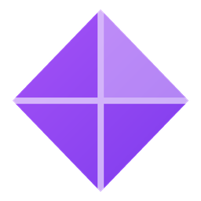

Try Prisma
A live copy of the Prisma app, right in your browser. Every tab works. Change the colours, build a crosshair, set binds. Nothing on your PC is touched.
Colour
Whole screen is OFF. The sliders only change the picture above.
Prisma works best with your own uploaded screenshots. In this demo your picture stays in your browser.
Presets
Save the current look for this display
Click a saved look to use it. Right-click it to delete it.
Optimizer
Real Windows tweaks for smoother games. Undo puts it all back.
Crosshair
Make your own crosshair and show it on top of your game.
Built-in
Style
Saved crosshairs
Overlay
Shows your CPU, GPU and memory use on top of your game.
Position
Show
Game profiles
Choose a game and a look. Prisma switches to it when the game starts and puts your colours back when it closes.
Your games
Waiting for one of your games to start...
Binds
Click a key box, then press the keys you want, for example Ctrl + Alt + P. Esc cancels. These work in the demo!
Themes
Change how Prisma looks. Pick a theme, make your own with Custom, and set how round the corners are.
Make your own:
Account
Log in to save your looks, crosshairs and game profiles online and use them on another PC.
Upload saves your looks, crosshairs and game profiles. Download replaces the ones on this PC with your saved copy.
It's the same account as on this website, so you can create one right now.
Settings
About Prisma
Beta versionPrisma makes your games look better and run better: colour and saturation, saved looks, a crosshair and stats overlay, game profiles that switch automatically, and one-click Windows tweaks that can all be undone.
Made in Denmark. Version 1.01.
Download Prisma
P R I S M A
Your game toolkit
This is a browser demo. The real app changes colours across your whole screen with your NVIDIA driver and draws the crosshair and overlay on top of your games.